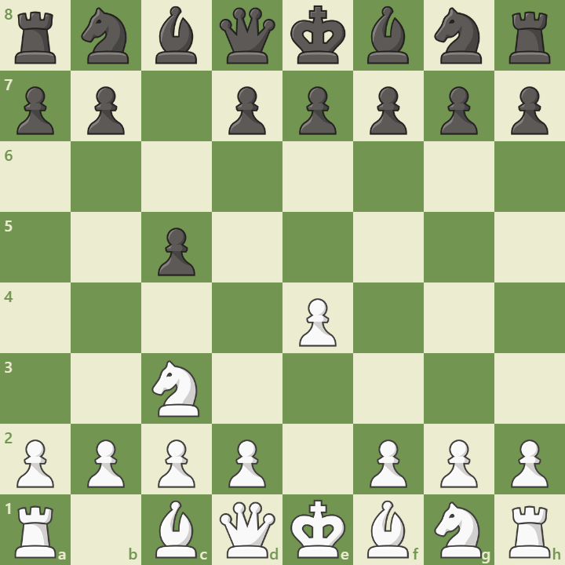

Overview
The Closed Sicilian is a quieter alternative to the Open Sicilian, beginning with:
1. e4 c5 2. Nc3
White avoids early central tension and builds up slowly with f4, g3, and Bg2. It’s ideal for players who prefer strategic maneuvering over sharp tactics.
Opening Diagram
This position arises after 1.e4 c5 2.Nc3. White prepares a kingside fianchetto and central expansion.
Main Variations
- Standard Closed: 2.Nc3 followed by g3, Bg2, f4 – slow buildup.
- Grand Prix Attack: 2.Nc3 and f4 early – aggressive kingside play.
- Anti-Sicilian: 2.Nc3 with early Bb5 – positional pressure.
Strategic Themes
- Control of d5 and central tension
- Kingside buildup with f4 and g3
- Flexible pawn structures
- Ideal for club players and strategic learners